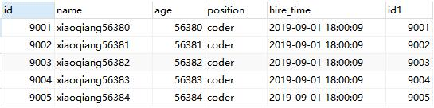

原文连接:https://www.cnblogs.com/xiaoqiang-code/p/11495376.html
-- 示例表
CREATE TABLE `employees` (
`id` int(11) NOT NULL AUTO_INCREMENT,
`name` varchar(24) NOT NULL DEFAULT '' COMMENT '姓名',
`age` int(20) NOT NULL DEFAULT '0' COMMENT '年龄',
`position` varchar(20) NOT NULL DEFAULT '' COMMENT '职位',
`hire_time` timestamp NOT NULL DEFAULT CURRENT_TIMESTAMP ON UPDATE CURRENT_TIMESTAMP COMMENT '入职时间',
PRIMARY KEY (`id`),
KEY `idx_name_age_position` (`name`,`age`,`position`) USING BTREE,
KEY `idx_age` (`age`) USING BTREE
) ENGINE=InnoDB AUTO_INCREMENT=136326 DEFAULT CHARSET=utf8 COMMENT='员工表'
--创建100000条记录
drop procedure if EXISTS insert_emp;
delimiter ;;
create procedure insert_emp()
BEGIN
declare i int;
set i=1;
while(i < 100000)DO
INSERT INTO employees(name,age,position) values(CONCAT('xiaoqiang',i),i,'coder');
SET i=i+1;
end WHILE;
end;;
delimiter ;
call insert_emp();根据自增且连续的主键排序的分页查询
select * from employees LIMIT 9999 ,5;0.png)
表示从表employees 中取出从10000行开始的5行记录。看似只查询5条记录，实际这条SQL是先读取10005条记录，然后抛弃前10000条记录，然后读到后面5条想要的数据。没有添加单独的order by，表示通过主键排序。
因此要查询一张大表比较靠后的数据，执行效率是非常低的。
因为主键是自增且连续的，所以可以改写成按照主键查询从第10001开始的五行数据，如下：
select * from employees WHERE id > 9999 limit 5;
可以看到两个sql的执行计划，显然改写后的sql走了索引，而且扫描的行数大大减少，执行效率会更高。但是，这条改写的sql在很多场景下并不实用，因为表中可能某些记录被删除后，主键空缺，导致结果不一致。
先删除一条记录，然后测试下原来sql和优化后的sql：
select * from employees LIMIT 9999 ,5; select * from employees where id> 9999 limit 5;
两条sql的结果不一样，因此，如果主键不连续，不能使用上面描述的方法。
另外由于原来sql是order by非主键字段，按照上面的方法改写sql的结果不一致。所以这种改写得满足以下两个条件：
- 主键自增且连续
结果是按照主键排序的
根据非主键字段排序的分页查询
select * from employees order by name limit 9000, 5; explain select * from employees order by name limit 9000, 5;key字段对应的值为null，发现并没有使用name字段的索引。因为扫描整个索引并查找到没有索引的行，可能要便利多个索引树，其成本比扫描全表的成本更高，索引优化器放弃使用索引。
优化的关键是：让排序时返回的字段尽可能的少，所以可以让排序和分页操作先查出主键，然后根据主键查到对应的记录。
改下如下：
select * from employees as e inner join(select id from employees order by name limit 9000,5) as ed on e.id=ed.id;
可以看到结果与原来的sql结果是一致的，执行时间减少了一般以上，再对比下执行计划：
原来的sql使用的是filesort排序，而优化后的sql使用的是索引排序。
in和exists优化
原则：小表驱动大表，即小表的数据集驱动大表的数据集
in：当B表的数据集小于A表的数据集时，in由于exists
select * from A where id in(select id from B)
等价于
for(select id from B){
select * from A where A.id=B.id
}exists:当A表的数据集小于B表的数据集时，exitsts优于in
当著查询A的数据，放到子查询B中做条件验证，根据验证结果（true或false）来决定著查询的数据是否保留。
select * from A exists(select 1 from B where A.id=B.id)
等价于
for(select * from A){
select * from B where A.id=B.id
}count(*)查询优化
explain select count(1) from employees;
explain select count(id) from employees;
explain select count(name) from employees;
explain select count(*) from employees;
四个sql的执行计划几乎一样的，count(name)使用的是联合索引， 主要区别根据某个字段做count操作不会统计字段为null的值的数据行。
除了count(name)的其他count操作，都是用的辅助索引而不是主键索引， 因为二级索引存储数据更少，检索性能更高。
还没关注我的公众号？
- 扫文末二维码关注公众号【小强的进阶之路】可领取如下:
- 学习资料： 1T视频教程：涵盖Javaweb前后端教学视频、机器学习/人工智能教学视频、Linux系统教程视频、雅思考试视频教程；
- 100多本书：包含C/C++、Java、Python三门编程语言的经典必看图书、LeetCode题解大全；
- 软件工具：几乎包括你在编程道路上的可能会用到的大部分软件；
- 项目源码：20个JavaWeb项目源码。
11.png)